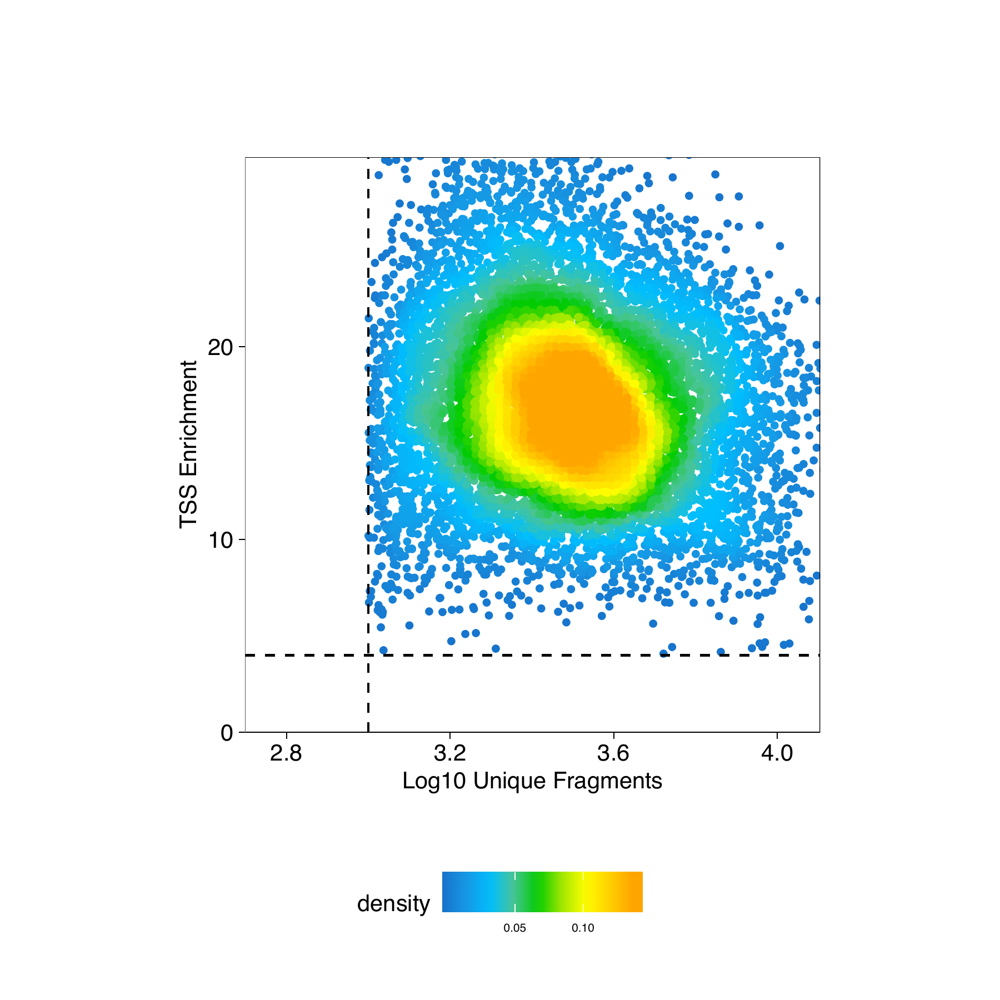

3.2 Manipulating An ArchRProject
Now that we have created an ArchRProject, there are many things that we can do to easily access or manipulate the associated data.
Example 1. The $ accessor allows direct access to cellColData
#A. Access cell names associated with each cell
head(projHeme1$cellNames)
# [1] "scATAC_BMMC_R1#TTATGTCAGTGATTAG-1" "scATAC_BMMC_R1#AAGATAGTCACCGCGA-1"
# [3] "scATAC_BMMC_R1#GCATTGAAGATTCCGT-1" "scATAC_BMMC_R1#TATGTTCAGGGTTCCC-1"
# [5] "scATAC_BMMC_R1#TCCATCGGTCCCGTGA-1" "scATAC_BMMC_R1#AGTTACGAGAACGTCG-1"
#B. Access sample names associated with each cell
projHeme1$Sample
# character-Rle of length 10661 with 3 runs
# Lengths: 4932 3275 2454
# Values : "scATAC_BMMC_R1" "scATAC_CD34_BMMC_R1" "scATAC_PBMC_R1"
#C. Access TSS Enrichment Scores for each cell
quantile(projHeme1$TSSEnrichment)
# 0% 25% 50% 75% 100%
# 4.027 13.922 16.832 19.937 41.782 Example 2. Subsetting an ArchRProject by cells
#A. Subset the project numerically
projHeme1[1:100, ] #First 100 cells
# class: ArchRProject
# outputDirectory: /Volumes/JG_SSD_2/ArchR_Walkthrough/HemeTutorial
# samples(3): scATAC_BMMC_R1 scATAC_CD34_BMMC_R1 scATAC_PBMC_R1
# sampleColData names(1): ArrowFiles
# cellColData names(11): DoubletEnrichment DoubletScore ... Sample
# TSSEnrichment
# numberOfCells(1): 100
# medianTSS(1): 10.7725
# medianFrags(1): 10200.5
#B. Subset the project using cellNames
projHeme1[projHeme1$cellNames[1:100], ]
# class: ArchRProject
# outputDirectory: /Volumes/JG_SSD_2/ArchR_Walkthrough/HemeTutorial
# samples(3): scATAC_BMMC_R1 scATAC_CD34_BMMC_R1 scATAC_PBMC_R1
# sampleColData names(1): ArrowFiles
# cellColData names(11): DoubletEnrichment DoubletScore ... Sample
# TSSEnrichment
# numberOfCells(1): 100
# medianTSS(1): 10.7725
# medianFrags(1): 10200.5
#C. Subset the project to return all cells corresponding to a specific sample
idxSample <- BiocGenerics::which(projHeme1$Sample %in% "scATAC_BMMC_R1")
cellsSample <- projHeme1$cellNames[idxSample]
projHeme1[cellsSample, ]
# class: ArchRProject
# outputDirectory: /Volumes/JG_SSD_2/ArchR_Walkthrough/HemeTutorial
# samples(3): scATAC_BMMC_R1 scATAC_CD34_BMMC_R1 scATAC_PBMC_R1
# sampleColData names(1): ArrowFiles
# cellColData names(11): DoubletEnrichment DoubletScore ... Sample
# TSSEnrichment
# numberOfCells(1): 4932
# medianTSS(1): 15.254
# medianFrags(1): 2771
#D. Subset the project based on a specific TSS enrichment score cutoff
idxPass <- which(projHeme1$TSSEnrichment >= 8)
cellsPass <- projHeme1$cellNames[idxPass]
projHeme1[cellsPass, ]
# class: ArchRProject
# outputDirectory: /Volumes/JG_SSD_2/ArchR_Walkthrough/HemeTutorial
# samples(3): scATAC_BMMC_R1 scATAC_CD34_BMMC_R1 scATAC_PBMC_R1
# sampleColData names(1): ArrowFiles
# cellColData names(11): DoubletEnrichment DoubletScore ... Sample
# TSSEnrichment
# numberOfCells(1): 10500
# medianTSS(1): 16.9275
# medianFrags(1): 3042Example 3. Adding data to an ArchRProject
#Add a column to cellColData that contains more legible sample names by removing excess info from the original sample names
bioNames <- gsub("_R2|_R1|scATAC_","",projHeme1$Sample)
bioNames
# character-Rle of length 10661 with 3 runs
# Lengths: 4932 3275 2454
# Values : "BMMC" "CD34_BMMC" "PBMC"
projHeme1$bioNames <- bioNames
#Add a column to cellColData that only contains information for a subset of cells
bioNames <- bioNames[1:10]
cellNames <- projHeme1$cellNames[1:10]
projHeme1 <- addCellColData(ArchRProj = projHeme1, data = paste0(bioNames),
cells = cellNames, name = "bioNames2")
#We can compare these two columns to see "NA" filled in where data wasnt available for bioNames2
getCellColData(projHeme1, select = c("bioNames", "bioNames2"))
# DataFrame with 10661 rows and 2 columns
# bioNames bioNames2
# <character> <character>
# scATAC_BMMC_R1#TTATGTCAGTGATTAG-1 BMMC BMMC
# scATAC_BMMC_R1#AAGATAGTCACCGCGA-1 BMMC BMMC
# scATAC_BMMC_R1#GCATTGAAGATTCCGT-1 BMMC BMMC
# scATAC_BMMC_R1#TATGTTCAGGGTTCCC-1 BMMC BMMC
# scATAC_BMMC_R1#TCCATCGGTCCCGTGA-1 BMMC BMMC
# ... ... ...
# scATAC_PBMC_R1#GCTGCGAAGATCCGAG-1 PBMC NA
# scATAC_PBMC_R1#GCAGCTGGTGGCCTTG-1 PBMC NA
# scATAC_PBMC_R1#GCAGATTGTACGCAAG-1 PBMC NA
# scATAC_PBMC_R1#TTCGTTACATTGAACC-1 PBMC NA
# scATAC_PBMC_R1#CGCTATCGTGAGGTCA-1 PBMC NAExample 4. Obtaining unique fragment counts
#Select the column from cellColData corresponding to the number of unique
#nuclear (non-mitochondrial) fragments per cell
df <- getCellColData(projHeme1, select = "nFrags")
df
# DataFrame with 10661 rows and 1 column
# nFrags
# <numeric>
# scATAC_BMMC_R1#TTATGTCAGTGATTAG-1 26189
# scATAC_BMMC_R1#AAGATAGTCACCGCGA-1 20648
# scATAC_BMMC_R1#GCATTGAAGATTCCGT-1 18991
# scATAC_BMMC_R1#TATGTTCAGGGTTCCC-1 18296
# scATAC_BMMC_R1#TCCATCGGTCCCGTGA-1 17458
# ... ...
# scATAC_PBMC_R1#GCTGCGAAGATCCGAG-1 1038
# scATAC_PBMC_R1#GCAGCTGGTGGCCTTG-1 1037
# scATAC_PBMC_R1#GCAGATTGTACGCAAG-1 1033
# scATAC_PBMC_R1#TTCGTTACATTGAACC-1 1033
# scATAC_PBMC_R1#CGCTATCGTGAGGTCA-1 1002
#Or, instead of selecting a column by name, we can actually perform operations on a given
#column using its column name
df <- getCellColData(projHeme1, select = c("log10(nFrags)", "nFrags - 1"))
df
# DataFrame with 10661 rows and 2 columns
# log10(nFrags) nFrags - 1
# <numeric> <numeric>
# scATAC_BMMC_R1#TTATGTCAGTGATTAG-1 4.4181189156542 26188
# scATAC_BMMC_R1#AAGATAGTCACCGCGA-1 4.31487799153581 20647
# scATAC_BMMC_R1#GCATTGAAGATTCCGT-1 4.27854783377585 18990
# scATAC_BMMC_R1#TATGTTCAGGGTTCCC-1 4.26235615159869 18295
# scATAC_BMMC_R1#TCCATCGGTCCCGTGA-1 4.24199448915678 17457
# ... ... ...
# scATAC_PBMC_R1#GCTGCGAAGATCCGAG-1 3.01619735351244 1037
# scATAC_PBMC_R1#GCAGCTGGTGGCCTTG-1 3.01577875638904 1036
# scATAC_PBMC_R1#GCAGATTGTACGCAAG-1 3.01410032151962 1032
# scATAC_PBMC_R1#TTCGTTACATTGAACC-1 3.01410032151962 1032
# scATAC_PBMC_R1#CGCTATCGTGAGGTCA-1 3.00086772153123 1001Example 5. Plotting QC metrics - log10(Unique Fragments) vs TSS enrichment score
df <- getCellColData(projHeme1, select = c("log10(nFrags)", "TSSEnrichment"))
df
# DataFrame with 10661 rows and 2 columns
# log10(nFrags) TSSEnrichment
# <numeric> <numeric>
# scATAC_BMMC_R1#TTATGTCAGTGATTAG-1 4.4181189156542 7.149
# scATAC_BMMC_R1#AAGATAGTCACCGCGA-1 4.31487799153581 7.911
# scATAC_BMMC_R1#GCATTGAAGATTCCGT-1 4.27854783377585 4.505
# scATAC_BMMC_R1#TATGTTCAGGGTTCCC-1 4.26235615159869 6.946
# scATAC_BMMC_R1#TCCATCGGTCCCGTGA-1 4.24199448915678 4.799
# ... ... ...
# scATAC_PBMC_R1#GCTGCGAAGATCCGAG-1 3.01619735351244 24.356
# scATAC_PBMC_R1#GCAGCTGGTGGCCTTG-1 3.01577875638904 22.537
# scATAC_PBMC_R1#GCAGATTGTACGCAAG-1 3.01410032151962 20.146
# scATAC_PBMC_R1#TTCGTTACATTGAACC-1 3.01410032151962 30.198
# scATAC_PBMC_R1#CGCTATCGTGAGGTCA-1 3.00086772153123 21.485Now lets plot the number of unique nuclear fragments (log10) by the TSS enrichment score. This type of plot is key for identifying high quality cells. We can further adjust our cutoffs based on this plot if need be.
p <- ggPoint(
x = df[,1],
y = df[,2],
colorDensity = TRUE,
continuousSet = "sambaNight",
xlabel = "Log10 Unique Fragments",
ylabel = "TSS Enrichment",
xlim = c(log10(500), quantile(df[,1], probs = 0.99)),
ylim = c(0, quantile(df[,2], probs = 0.99))
) + geom_hline(yintercept = 4, lty = "dashed") + geom_vline(xintercept = 3, lty = "dashed")
p
To save an editable vectorized version of this plot, we use plotPDF().